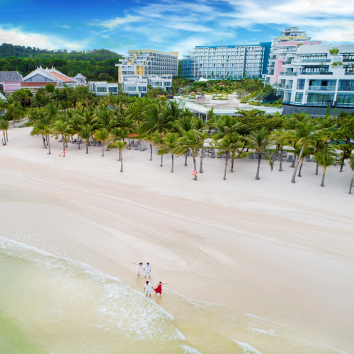
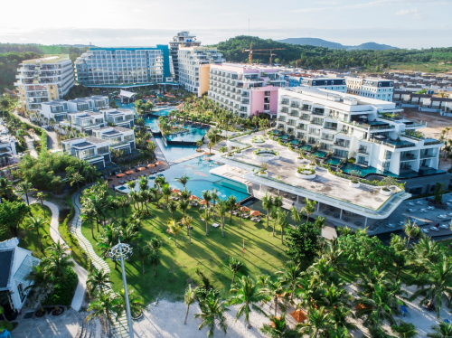
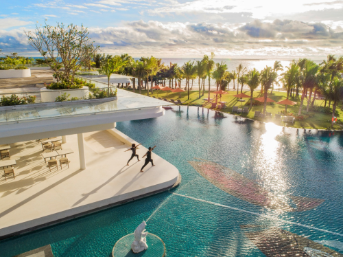

Thừa hưởng bờ biển xanh ngọc bích trong vắt của Bãi Khem - Top 100 bãi biển đẹp nhất thế giới 2018, Premier Residences Phu Quoc Emerald Bay tại phía Nam đảo Ngọc là điểm dừng chân mới cho những du khách năng động. Nơi đây cuốn hút không chỉ bởi thiết kế độc đáo với hình ảnh "Thùng nước mắm" đặc trưng của Phú Quốc, mà còn có vị trí thuận lợi cho du khách thỏa sức tìm hiểu về đời sống của ngư dân vùng biển đảo
Với ưu thế khu nghỉ dưỡng Condotel 5 sao gồm 745 phòng hiện đại, Premier Residences Phu Quoc Emerald Bay luôn đảm bảo mọi trải nghiệm và dịch vụ cho du khách sẽ luôn được ưu tiên. Khu nghỉ dưỡng này lại tạo điều kiện, khuyến khích các du khách thoải mái khám phá khắp mọi nơi nhờ vị trí ngay tại trung tâm thị trấn An Thới.
Tự do sáng tạo là một trong những điều thú vị du khách trong mỗi chuyến đi. Du khách nghỉ dưỡng thoải mái tại Premier Residences Phu Quoc Emerald Bay từ những tiện ích có sẵn nơi đây như như hồ bơi nhiều tầng sải rộng ra sát biển, từng chiếc ghế lười hưởng trọn bóng mát bên tán dừa vi vu và nhâm nhi ly cocktail bên cuốn sách yêu thích.
Ngoài ra, du khách còn tham gia trò chơi dưới nước như chèo thuyền kayak, lướt ván, bóng chuyền... hoặc dã ngoại đúng nghĩa bằng xe Jeep dọc theo đường biển từ mũi Nam đến mũi Bắc của đảo.

Đại diện khu nghỉ dưỡng cho biết, vòng quanh các đảo ở Nam Phú Quốc, bắt đầu từ Hòn Thơm là một trong những tour được nhiều du khách trong và ngoài nước yêu thích. Đầu năm 2018, khi cáp treo Hòn Thơm nối liền thị trấn An Thới, qua Hòn Rỏi, Hòn Dừa tới Hòn Thơm của Sun Group khai trương, những chuyến đi ra đảo và ngắm Nam Phú Quốc từ trên cao mang đến du khách trải nghiệm khó quên
Hòn Thơm và các hòn đảo nhỏ tại Nam Phú Quốc được nhiều du khách từng đến đây ví như những viên ngọc xanh nhiều sắc độ. Xanh thẫm của rừng già, xanh lục từ biển cả, xanh thẳm trời mây, điểm xuyết vào đó là những khoảng xanh lơ kỳ ảo từ các bãi tắm... nơi đây là điểm đến giúp du khách thỏa sức vẫy vùng dưới làn nước mát lạnh.
Để trải nghiệm cuộc sống địa phương của cư dân An Thới, du khách có thể dành một sớm mai lang thang bên cảng cá, xem mớ mực tươi còn trong veo bơi lội hoặc chọn một đêm đẹp trời để lênh đênh câu mực, câu cá. Nhờ những hoạt động này, du khách sẽ hiểu phần nào đời sống ngư phủ của mảnh đất người xưa tại Phú Quốc.
Phạm Lý Thanh Hiếu
Đào Minh
Đức